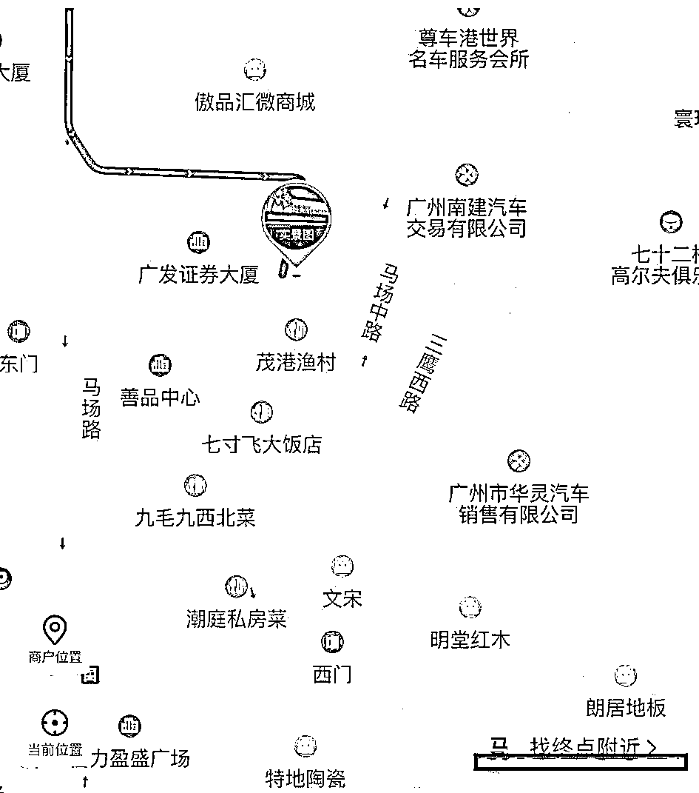
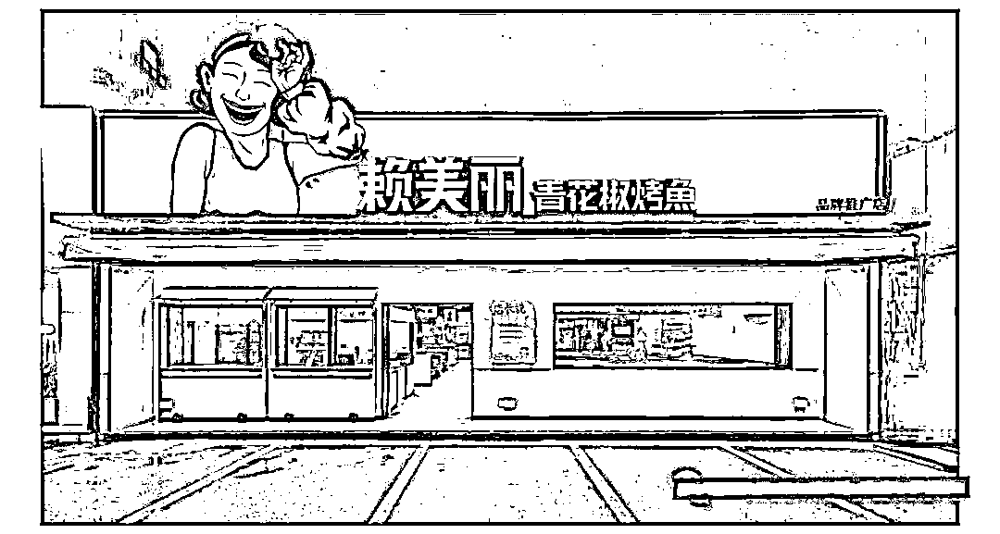
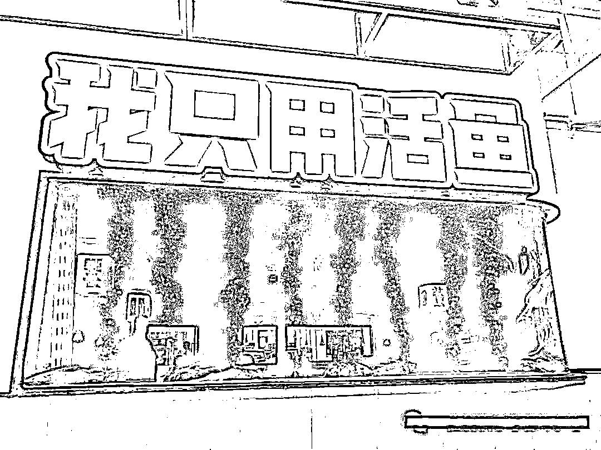
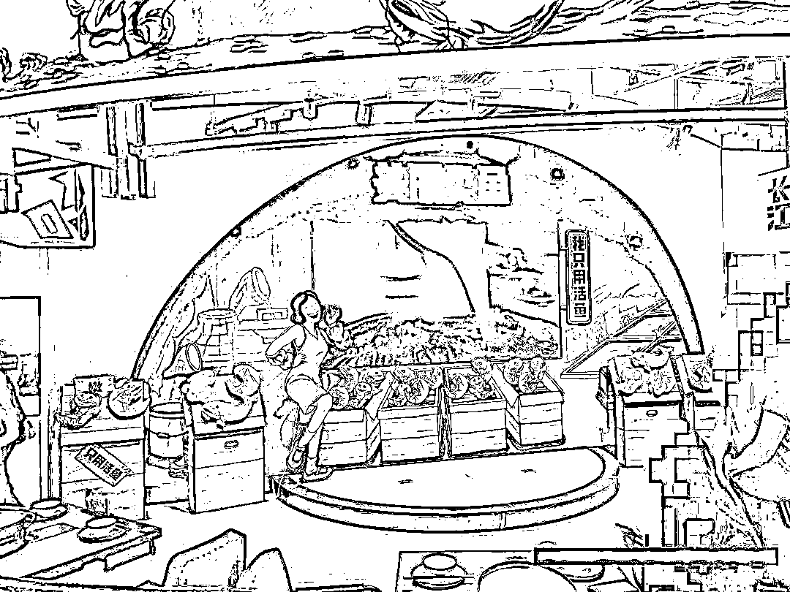
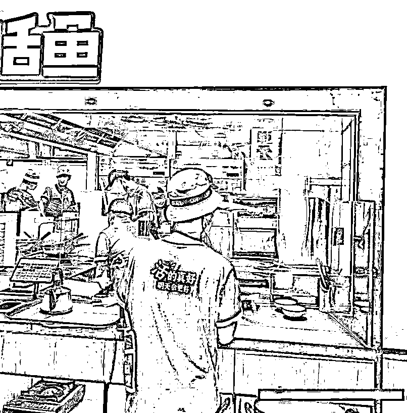
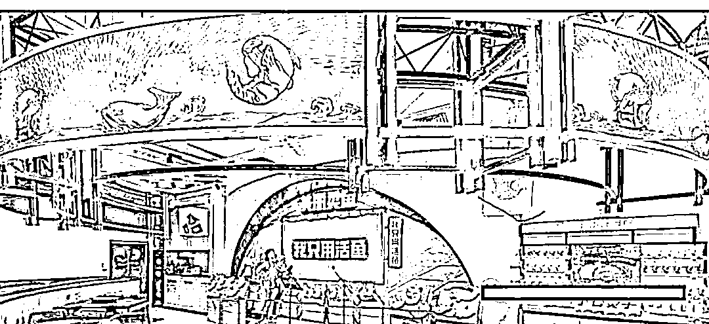
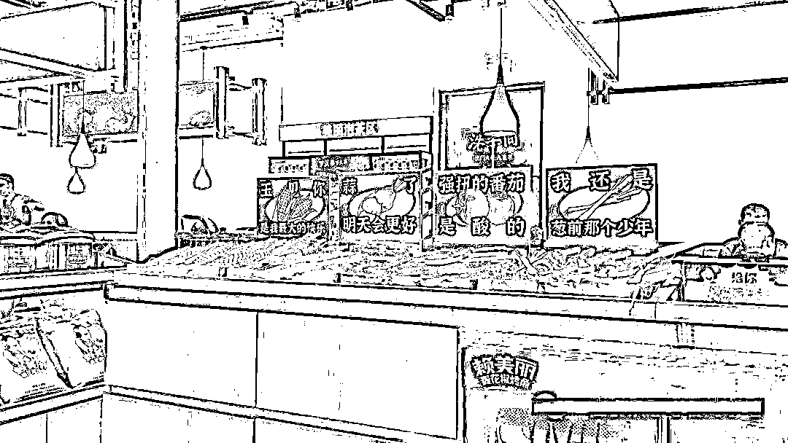
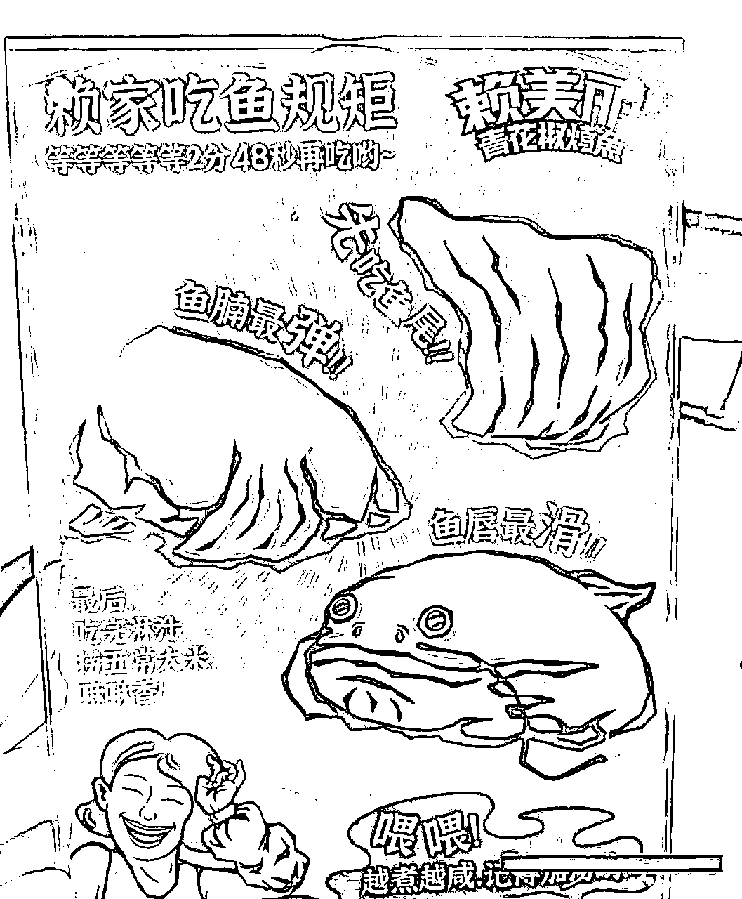
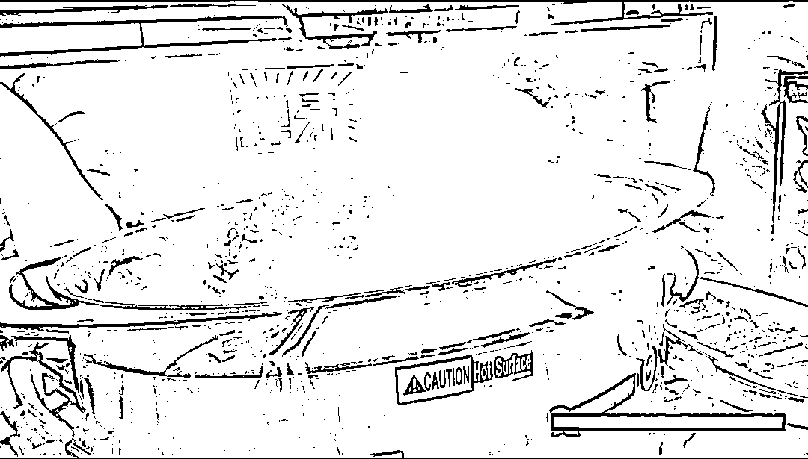
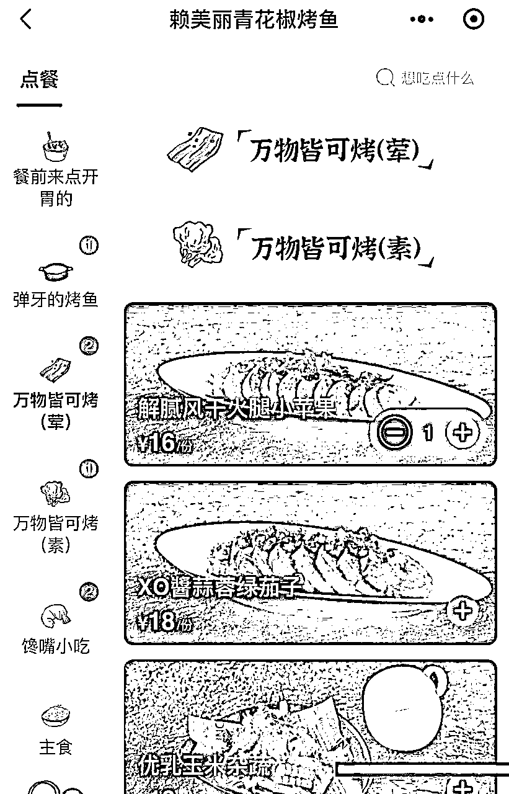

来源：https://h24wtd3rug.feishu.cn/docx/DP15dbS0OopvMyxhqvrcnVTZnpf
九毛九（即太二母公司）旗下新开了一家子品牌，名叫“赖美丽”，因为好奇所以前去探探店，顺便写下面对这些新品牌时的思考。
先说地理位置：

赖美丽位置处于黄埔大道西马场路美食街，与九毛九门店相连。
位处食街，门店前有较多停车场，离地铁站561米，周边一公里内涵盖了大量的商业大楼及楼盘，而且这边的企业内人员大多高级白领，周边楼盘价格更是广州前列，因此周边潜在消费客户多，且消费能力也较高。
位置选的好了，那门店怎么样？
我们先从门头来看

【门头简洁广阔年轻化】
赖美丽的门头，我们可以从这张图来看，非常简洁，除了IP形象，其次就是品牌名与品类名，最后是整个白色背景灯。
门头具备【引客】与【解惑】的特点
我们先看【引客】
1.【热情IP提升好感】赖美丽的形象IP放大了热情的笑容，加重了手部擦汗的视觉形象，让别人看到瞬间建立起一个热情好客的女性形象，从而拉近与客户距离，赢得好感。
2.【不断挥动的手部加强视觉吸引】相对于静物，移动的物体吸引注意力更强。我们可以想象一个静止的IP和一个移动IP，往往我们会被移动的IP所吸引。
赖美丽的IP形象移动的地方设置在了手臂，这个更是非常漂亮的加分点，因为手部的上下移动进一步强化了热情工作中女性擦汗的角色，将“热情好客”的形象更加突出。
3.【超大的亮灯，提升视觉吸引】灯光是门店非常重要的一环，而赖美丽在灯光上花了大手笔，将整个背面全部变为白色亮光灯，如果在晚上，一个这么亮堂的门头，会让客户更容易看见，从而优先吸引到客户
【解惑】
1.【品类介绍解答客户疑问】客户面对一家新店，首先的疑问是“这是什么店”，赖美丽在名字后面紧接着附上“青花椒烤鱼”，明确的告知客户这是一家烤鱼店。
进门店右手边还有一个海报【美丽说】这里面沿用了太二的店长说的方式，将门店产品的特点以活泼的形式作为展现。
说完门头，我们进到店内看看
店内我在【店内特殊设计】【店内标语及物料展示】【店内服务】三块里认为具备特点的来展开讲
【店内设计】

1.【强化买点】店内有一个活鱼池，特意标注了“我只用活鱼“，突出门店鱼的新鲜特点，与其它烤鱼门店内的鱼建立差异化；

2.【互动舞台】进门店右手边有一个小舞台，如图，上面是一个大电视，目前播放的赖美丽鱼的来源与做法。这个区域听闻是拿来让“愿意分享故事的客户”上台分享的，目前还没有完全启动；
看到这个小舞台，我想到了“脱口秀”，想到了“胡桃里互动点歌抽奖”，不知道往后是否能有效衔接进去。期待这些的出现，很想看到这些元素的融入后会如何。

3.【透明化厨房】现在透明化厨房已成为很多门店的必备，透明化厨房能让人全程看到食材处理的过程，从而让让客户更加放心。
【店内标语及物料展示】

1.【鱼形象的植入，加深记忆】在店内不同处，都有烤鱼原型的IP露出，不断加深客户对这款“鱼”的记忆，以达到在原材料的维度上与其他门店形成差异化。
其次还将其作为了互动的道具，让小朋友与其互动。

2.【活泼语言的植入】在一些原材料上，使用了“活泼语言加动漫画”来展示原材料，这里的目的个人觉得更侧重于是建立一种互动关系，让看到的人会心一笑，从而对品牌建立更多的好感。

3【吃鱼的仪式感】桌面上有一个吃鱼的步骤，我依稀记得太二也有。
这些的步骤出现是为了什么？
其实是为了建立“仪式感”，让吃鱼这个动作变为可记忆、可传播、具备差异化的存在。
【店内服务】
1.【吃鱼前的强化服务】上鱼后，服务员会先进问候，然后再慢慢将汤底倒入，紧接着会有一大串的吃鱼步骤讲解。
2.【热情的互动】我们在吃鱼过程，我观察到店内服务员会留意门店内客户的情况，有人询问的适合，耐心讲解之余，还非常热情的与客户进行互动。
讲完店内，我们最后来到产品的环节，赖美丽如何突出产品的视觉与买点呢？

视觉上：
【新奇感】烤鱼上锅，先是解释，然后倒汤，在汤进入后，升起阵阵白烟，让人有一种新奇感。
卖点上：
1.【以鲜活+弹切入】赖美丽的鱼，通篇强调“鲜活、弹”不管是菜单，菜品呈现方式，还是在服务讲解过程，“鲜活与弹”字出现的频率极高。

2.【新奇产品】这里面有一些新奇产品，例；烤苹果、绿茄子等，是一些市面较少的产品，新奇之余也在与一些烤鱼门店做区分。
讲完了内外，讲讲个人的一些思考与感受：
【门头】在门头引客的环节上，赖美丽的视觉做的很棒，有点美中不足的是卖点不够强烈，这也导致了解惑的步骤上没有衔接的更好。
除了这些视觉动线设计，与客户实际利益相关的信息却很空白，这就像一个吸引眼球的产品，虽然我被吸引了，但是我不知道他和其他同类型产品对比，能否更好的解决我的需求。
【舞台的未来】因为个人非常好奇这个舞台的展示，舞台在氛围上的开启与闭环非常重要，可是到目前这个舞台还没有出现过活动，如果后期没能衔接，那无疑是巨大的浪费。
【沿袭路径容易，突破难】在赖美丽有很多太二的痕迹，借力确实能让这个品牌更快建立起自身特色，但如果接完力没有突破自身，那借的不是力，而是刀。
【产品卖点内外一致性较弱】虽然“鲜活+弹”在整体上有了较大的曝光，但是从物料的展示与围绕“鲜活与弹”这两个卖点上没有展开强有力的说服力，让别人理解“为什么鲜活”，为什么“弹”，接受为什么要“吃鲜活”，而为什么要吃“弹”。（可以参考小马宋老师围绕半天妖的“不用挑”，真的做的非常棒。）
自己说了一大堆，但是站在一个刚开不到10天的门店，而且还是一家在打磨的门店，在各项上已经做的很棒，站在外部的我，只是在写，两者难度不可而喻。
感谢赖美丽给我带来的了不同的视角，让我学习到了很多新知识，如果有时间，会尝试写下赖美丽出现的目的与意义，还有其内在新门店的运营思考。
最后，祝愿赖美丽往后走的越来越好，越来越棒。